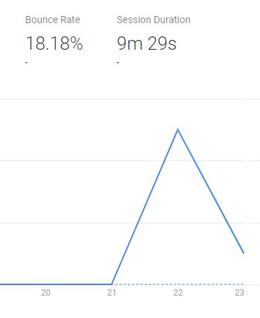
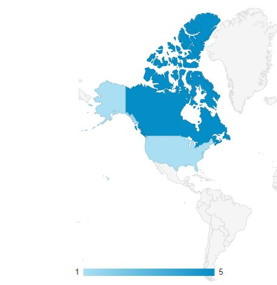
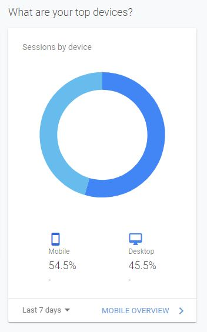

Introduction
I chose to analyze my user science journal because it is currently the only website that I have control over. It's also easy to share as it is already in a semi-complete state where I can share what I have been working on with those around me.
Methodology
I had a head start with the Google Analytics as I added the URL when I set it up. This week, I applied the tracking code to the website's HTML document. As a preliminary step before analyzing the data, I have made a few predictions about the user demographics:
- Users are adults between 20-50 from North America.
- They are likely to have reached my site through a link on social media.
- They are most likely to have arrived on a mobile device.
Results
At a glance, I can tell that the bounce rate is low which is good, and the session duration is decent for the amount of content that is available.
Moving onto the location data, I can see that it is consistent with my expectation of the traffic originating from United States and Canada.
I could see that visitors were split 50-50 between Chrome and Safari with 2/3 arriving by mobile. It was closer to 50-50 for individual sessions.
In addition, I could see that 86% of traffic originated from "direct" sources, while 14% came from referral.
Conclusion
Although I wasn't able to collect information like age or gender, I was able to reach a general conclusion on how accurate the results were. The originating country of each visitor made sense, as was the device used. 14% of visitors arrived through referral, which is consistent with expectations, but it is unclear where the 86% direct traffic originated. It is possible that these too, came from social media. This might make sense with time and further testing.